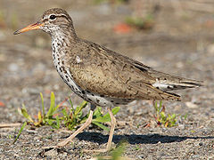
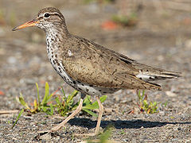

| Spotted Sandpiper | |
|---|---|
|  | |
| Breeding plumage | |
| Conservation status | |
| Binomial name | |
| Actitis macularius (Linnaeus, 1766) |
|
| Synonyms | |
|
Tringa macularia Linnaeus, 1766 |
| Spotted Sandpiper | |
|---|---|
|  | |
| Breeding plumage | |
| Conservation status | |
| Binomial name | |
| Actitis macularius (Linnaeus, 1766) |
|
| Synonyms | |
|
Tringa macularia Linnaeus, 1766 |
The Spotted Sandpiper (Actitis macularius syn. Actitis macularia) is a small shorebird, 18–20 cm long. Together with its sister species, the Common Sandpiper (A. hypoleucos) they make up the genus Actitis. They replace each other geographically; stray birds may settle down with breeders of the other species and hybridize.
Their breeding habitat is near fresh water across most of Canada and the United States. They migrate to the southern United States and South America, and are very rare vagrants to western Europe. These are not gregarious birds and are seldom seen in flocks.
Adults have short yellowish legs and an orange bill with a dark tip. The body is brown on top and white underneath with black spots. Non-breeding birds, depicted below, do not have the spotted underparts, and are very similar to the Common Sandpiper of Eurasia; the main difference is the more washed-out wing pattern visible in flight and the normally light yellow legs and feet of the Spotted Sandpiper. The Actitis species have a distinctive stiff-winged flight low over the water.
Spotted Sandpipers nest on the ground. During each summer breeding season, females may mate with and lay clutches for more than one male, leaving incubation to them. Male parents of first clutches may father chicks in later male's clutchs, probably due to sperm storage within female reproductive tracts, which is common in birds. Females that fail to find additional mates usually help incubate and rear chicks. "Prior to incubation, blood plasma concentrations of testosterone and dihydrotestosterone are substantially higher in males than in females" and these levels plummet 25-fold in males as incubation proceeds.[2] Additionally, mated females have testosterone concentrations that are 7 times higher than those of unmated females.[3]
These birds forage on ground or water, picking up food by sight. They may also catch insects in flight. They eat insects, crustaceans and other invertebrates. As they forage, they can be recognized by their constant nodding and teetering.
Spotted Sandpiper (front view)
Spotted Sandpiper,Non-breeding plumage
Spotted Sandpiper in Wallkill River Wildlife Refuge, NJ/NY

{kind=link}
{kind=link}
{kind=link}
{kind=link}